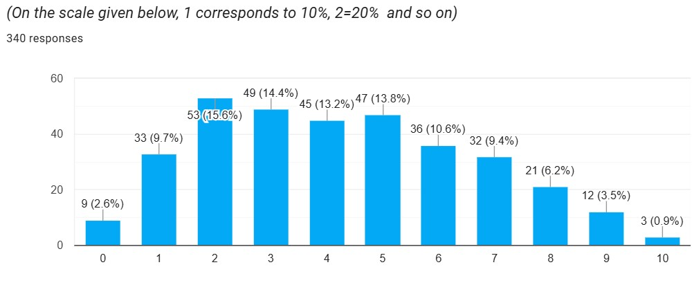
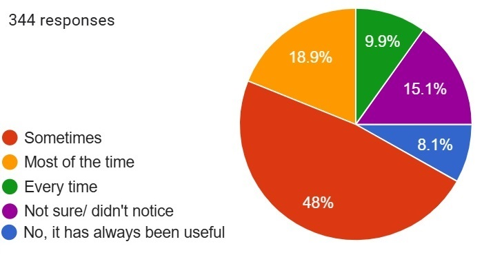
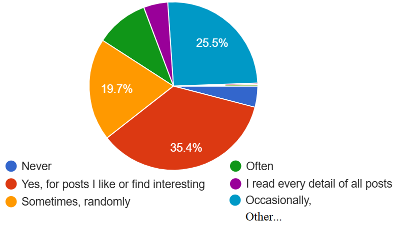

Social Media beyond scroll: Ease of use survey highlights the unspoken issues
An online survey conducted by using Google forms, was taken by mass 345 users ranging between ages 15-35. The questionnaire checks for users' experience regarding major social networking sites including Instagram, Reddit, Facebook, Tiktok, Linkedin. Its findings finally let us speak out loud what we all have been muttering to ourselves for sometime now.
Social Media Versus Social Networking Sites
Literature suggests that all social media platforms consists of honey-comb of seven building blocks including conversations, identity, presence, relationships, reputation, sharing, and groups. Each platform focuses on one or more of these building blocks and twirls their whole strategy around it. For example, ,this leaves us with five main categories of social media,
- • Social networking sites. (Twitter, Facebook, Instagram, Reddit)
- • Messaging/ calling apps. (WhatsApp, Zoom, IMO, Telegram, etc.)
- • Blog sites
- • Discussion and community forums
- • Media-specific sites. (Video sharing, YouTube, image sharing Pinterest, Audio
Social Networks' Ease of Use Survey
- % users resported that atleast 50% of their information comes from social media, and atleast 30 percent of information for 27% of the users.
- Curse of auto-refresh: Auto-refresh at any moment to load newer content has been reported as seldom helpful, while frustrating, at least sometimes by 67% of users (see responses in 2.5).
- Content is shown based on implicit user feedback, resulting in content suggestion similar to the one clicked by the user in previous sessions. This overpopulates the ’Explore’ tab’s grid with similar media objects, making diverse content tough to explore and may create a feeling of frustration.
- Lack of organization: Closely related posts are scattered everywhere. Thanks to the implicit feedback mechanism. And so is the randomized content. The point of social media, and explore tabs is to get randomized content, we get it. But what do users think about the curren strategy? The survey have shown that the majority would prefer organized content,but to varying degrees of organization, keeping the "feel" of social apps alive.
- A number of users haae agreed to having a sense of being controlled. Reported by 63% of users, there can be several factors contributing to this experience. One could be the less control over the content they consume and obvious control by the platform providers.
- Only 40% of users read the tags/ titles or descriptions of all posts or posts they like. Others may or may not pay attention to the tags depending on their need or interest. Which leaves us to think of how users are going to find an item upon searching when they don't know what to search for. This factor is important because these textual attributes are not just for copy rights, credits, or labeling for computer, but are contributors in bringing users from exploration towards searching, and information seeking. This again takes us to the auto-refresh issue which oftentimes triggers frustration among users for losing content.





These are selected findings from the survey conducted as a part on a larger academic research. Further information may be provided upon contact.